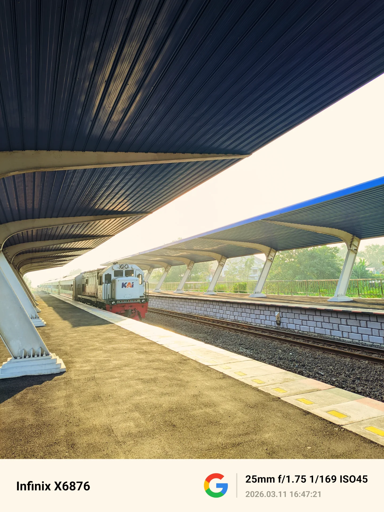
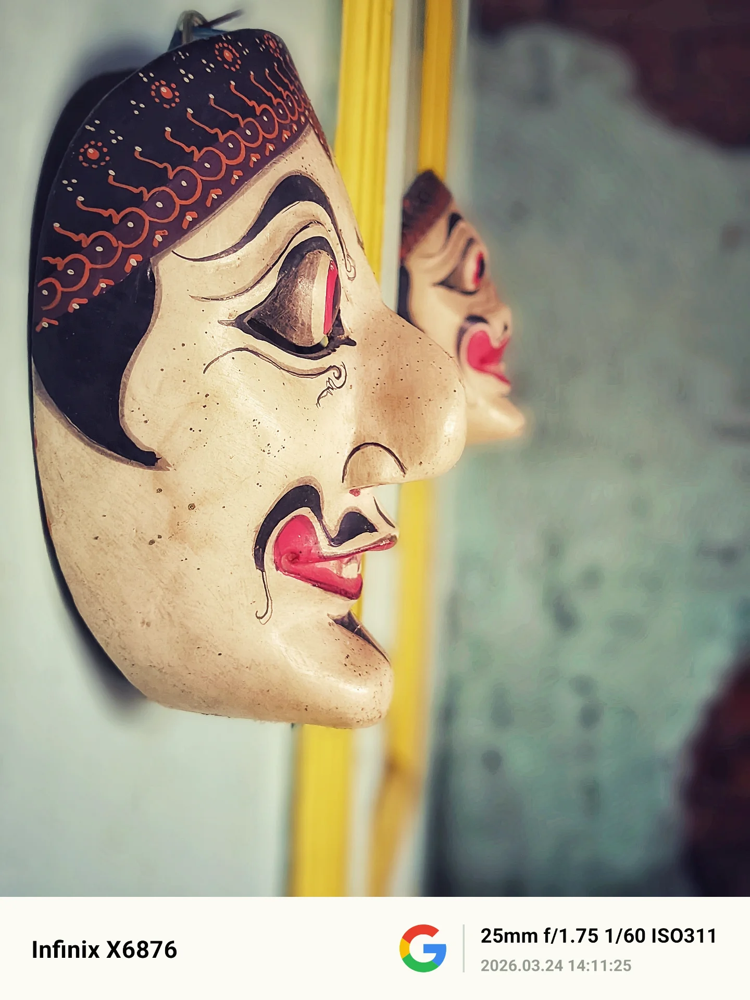
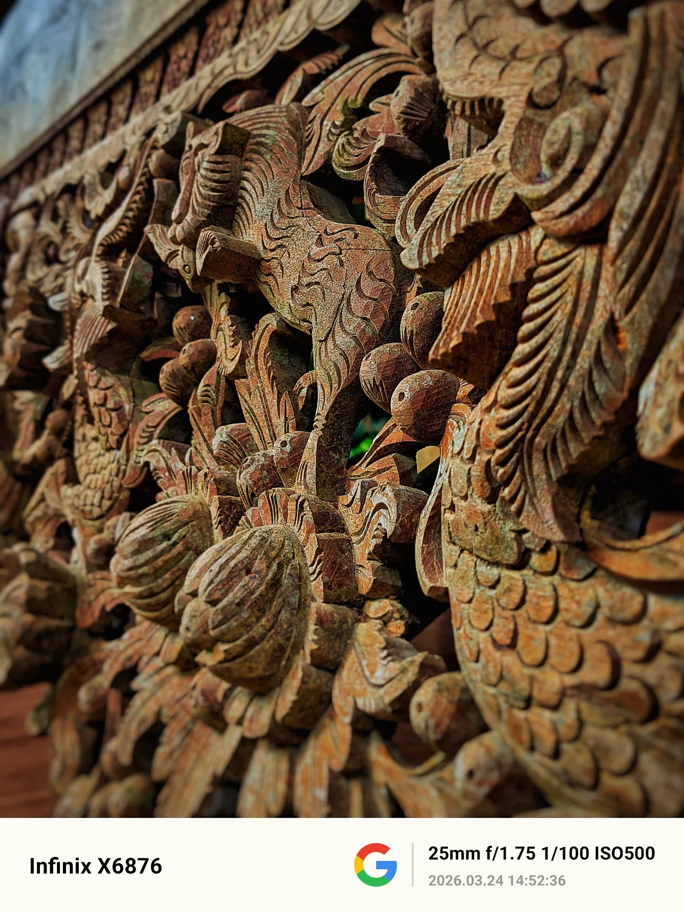
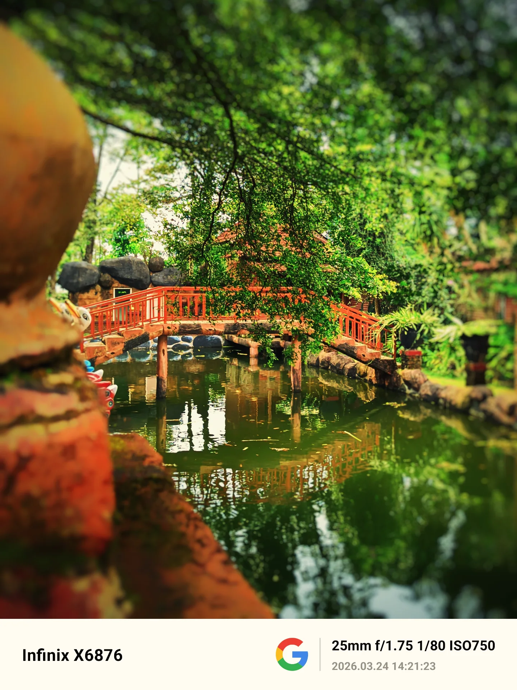

Tahukah kamu? Bagaimana rasa bimbang itu menyerang dan kembali? Suatu saat ada hal yang akan kuceritakan dibalik kafe ini. Suatu saat mungkin juga cahaya cahaya itu akan redup dan menciptakan bimbang yang kembali menyerang. Dua orang di dalam cafe itu mungkin tidak akan pernah tahu bahwa mereka adalah objek dari kontemplasiku malam ini. Tapi bagiku, mereka adalah bukti bahwa cahaya dan kehangatan itu nyata, dan aku, dengan caraku sendiri, sedang berjalan menuju ke sana lewat lensa, cerita dan ribuan kode yang semoga dapat mengubah dunia. #ceritalensa #fotografer #rasadankarsa
Infinix X6876 | f/1.4 | 1/60s | ISO 6400

Aku melihatnya dari jauh— bukan hanya karena ia bersinar, tapi karena aku tahu, ia berani untuk memulai. Cahaya itu indah—terlalu indah, hingga kadang aku merasa kecil di hadapannya. Seolah semua orang bisa mencapainya, kecuali aku yang masih tertahan di antara rimbun keraguan. Dan di saat itu, aku bertanya dalam diam… mengapa aku masih tertahan di antara rimbun keraguan? Aku sering memberi rasa pada sebuah tangkapan gambar, tetapi ironinya aku sendiri kehilangan rasa itu. Dimana aku sebenarnya? Sampai kapan aku harus terus kehilangan rasa yang sama? #cahayafoto #matahari #rasadanmakna #fotografi
Infinix X6876 | f/1.75 | 1/400s | ISO 100

Alam telah membawa cerita, dan aku sebatas hanya mendengarkan. #naturephoto #photography #alam
Infinix x6876 | f/1.75 | 1/80s | ISO 800

Wajahnya tak berbicara, namun sikapnya menyimpan kisah panjang tentang bertahan. Tentang waktu yang terus mengikis, namun tak pernah benar-benar mampu meruntuhkan makna. #budayaindonesia #heritage #fotografi
Infinix X6876 | f/1.75 | 1/60s | ISO 273

Ayunan yang sudah lama berhenti. Ia tidak lagi mengejar ketinggian, tidak lagi menghibur tawa. Kini, ia hanya diam di tengah rimbunnya alam, menjadi tempat bagi kenangan untuk bersandar, dan bagi waktu untuk beristirahat. Masih ada keindahan dalam diamnya, di mana setiap goresan di kayunya adalah sebuah cerita. #ceritalensa #fotografi #rasadanmakna
Infinix X6876 | f/1.75 | 1/75s | ISO 100

Bagiku foto adalah cara dimana kita merasa, menyentuh dan mencintai apa yang telah tertangkap oleh kamera, ia akan mengingatkan tentang hal kecil setelah kita lupa segalanya. (~Aaron Siskind). Tidak ada foto yang sempurna, tetapi melalui ketidaksempurnaan itulah nyawa sebuah foto itu hidup, dari situlah kita akan sadar seberapa cepat dunia berjalan lewat cuplikan waktu, cahaya dan perasaan yang tak terlihat. #fotografi #fotografer #captured #senjabercerita
Infinix x6876 | f/1.75 | 1/169s | ISO 45

Wajahnya tegas, mungkin ia adalah cerminan bagaimana waktu telah ia lewati, sepanjang suasana dan warna warni kehidupan, konon katanya, manusia akan tau sesuatu itu amat berharga setelah ia melewatinya, dan hanya akan ada 2 pilihan, bersyukur atau menyesal. #topengbudaya #heritage #fotografi
Infinix x6876 | f/1.75 | 1/60s | ISO 311

Menarik bukan? Mungkin terlintas sejenak, bagaimana bisa seorang manusia mengukir seperti itu? Pernahkah kamu berpikir bahwa setiap lekuk ini adalah rekaman waktu? Kayu yang diam ini menyimpan ribuan ketukan palu dan kesabaran seorang pemahat yang mungkin sudah tak ada lagi. #ukirankayu #ukirandanwaktu #fotografi
Infinix x6876 | f/1.75 | 1/100s | ISO 500

Tersembunyi di balik simfoni dedaunan yang berbisik ditiup angin, jembatan merah ini berdiri anggun di atas aliran air yang tenang. Setiap langkah di atasnya adalah perjalanan menuju kedamaian, menjauhkan kita sejenak dari hiruk-pikuk kehidupan. Di sinilah, di bawah bayang-bayang pepohonan yang rindang, alam menawarkan pelukan tenangnya, mengundang kita untuk merenung dan menemukan harmoni yang terlupakan. #jembatansimfoni #fotografi #ceritakita
Infinix x6876 | f/1.75 | 1/80s | ISO 750
Di dalam botol itu, laut telah lama mengeras menjadi keheningan yang kuning keemasan. Sang nakhoda tak butuh kompas, karena arah mata angin hanyalah fiksi di balik kaca yang tebal. Ia terjebak dalam sebuah 'selamanya' yang sempit, sebuah monumen bagi rindu yang tak sempat berlabuh. #fotografi #botolkapal #maknadanrasa
Infinix x6876 | f/1.4 | 1/60s | ISO 6400